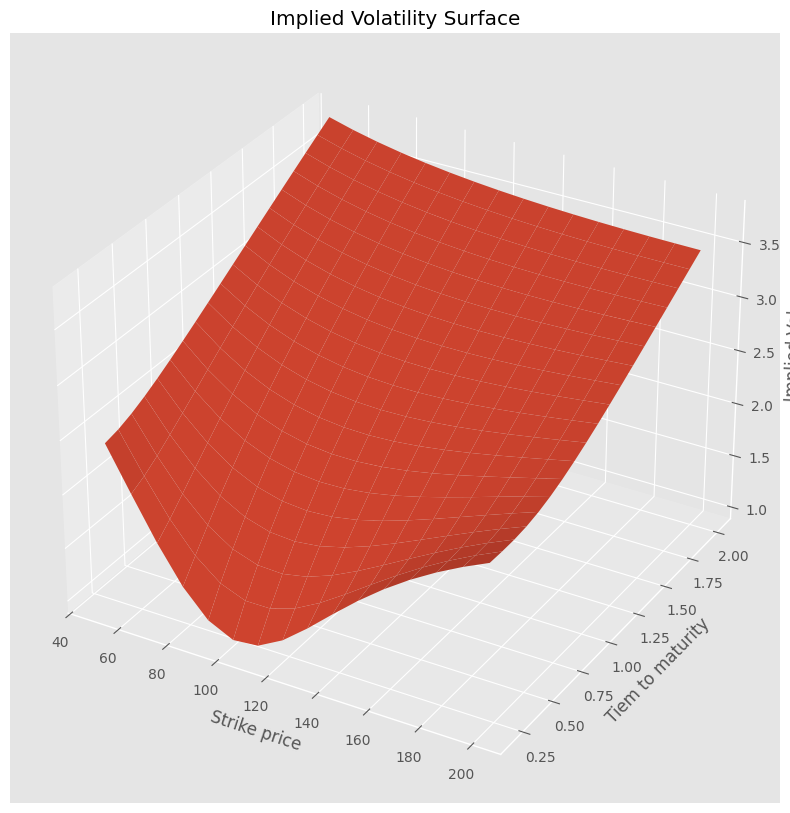
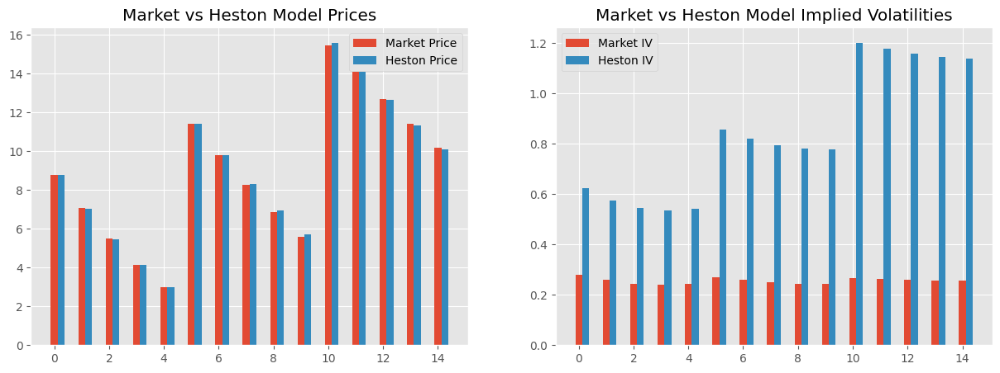

import ipywidgets as widgets
import numpy as np
import matplotlib.pyplot as plt
plt.style.use('ggplot')
import math
#import pandas as pd
from scipy.stats import norm
from scipy.optimize import minimize
from mpl_toolkits.mplot3d import Axes3D
from matplotlib import cm
from IPython.display import display
%matplotlib inline
import warnings
#Heston Model's Characteristic Function
def Heston_CF(u, S0, T, r, kappa, nu0, theta, xi, rho):
alpha = - u**2 / 2 - 1j * u / 2
beta = kappa - rho * xi * 1j * u
gamma = xi**2 / 2
h = np.sqrt(beta**2 - 4 * alpha * gamma)
rm = (beta - h) / xi**2
rp = (beta + h) / xi**2
g = rm / rp
C = kappa * (rm * T - 2 / xi**2 * np.log((1 - g * np.exp(-h * T)) / (1 - g)))
D = rm * (1 - np.exp(-h * T)) / (1 - g * np.exp(-h * T))
cf = np.exp(C * theta + D * nu0 + 1j * u * np.log(S0 * np.exp(r * T)))
return cf
#Heston Call Price with midpoint rule
def Heston_price(S0, K, T, r, kappa, nu0, theta, xi, rho):
params = (S0, T, r, kappa, nu0, theta, xi, rho)
P1 = 0.5
P2 = 0.5
umax = 50
n = 100
#remark: we may need to increase umax and n if numerical issues,
#particularly when options are deep OTM
du = umax / n
u = du / 2
for i in range(n):
temp1 = np.exp(-1j * u * np.log(K)) * Heston_CF(u - 1j, *params) / (1j * u * Heston_CF(-1j, *params))
temp2 = np.exp(-1j * u * np.log(K)) * Heston_CF(u, *params) / (1j * u)
P1 = P1 + 1 / np.pi * temp1 * du
P2 = P2 + 1 / np.pi * temp2 * du
u = u + du
price = np.real(S0 * P1 - K * np.exp(-r * T) * P2)
return price
#simulation asset prices
def simulate_stock_price(S0, T, r, kappa, nu0, theta, xi, rho, N, nstep):
# Generate random samples for the underlying asset's returns
np.random.seed()
dW1 = np.random.normal(size=(N, nstep))
dW2 = rho * dW1 + np.sqrt(1 - rho**2) * np.random.normal(size=(N, nstep))
dt = T / nstep
# Calculate the asset's returns and volatility at each time step
S = np.empty((N, nstep))
v = np.empty((N, nstep))
S[:, 0] = S0
v[:, 0] = nu0
for t in range(1, nstep):
S[:, t] = S[:, t-1] * np.exp((r - 0.5 * v[:, t-1]) * dt + np.sqrt(v[:, t-1] * dt) * dW1[:, t])
v[:, t] = v[:, t-1] + kappa * (theta - v[:, t-1]) * dt + xi * np.sqrt(v[:, t-1] * dt) * dW2[:, t]
v[:, t] = [max(0,v[i,t]) for i in range(N)] #to avoid negative variance
return S
#Pricing vanilla call option by MonteCarlo Simulations under Heston Model
def Heston_price_MC(S0, K, T, r, kappa, nu0, theta, xi, rho, N, nstep):
S = simulate_stock_price(S0, T, r, kappa, nu0, theta, xi, rho, N, nstep)
price = 0
for i in range(N):
price = price + 1 / N * max(0, S[i,nstep-1] - K) #average final payoff
price = price * np.exp(-r * T)
return price
S0 = 100 # Initial stock price
K = 120 # strike price
T = 0.5 #time to maturity
r = 0.05 # Riskfree rate
q = 0 # dividend yield
kappa = 0.8 # Meanreversion speed
nu0 = 0.3**2 # initial variance
theta = 0.3**2 # Longterm variance
xi = 0.5 # Volatility of volatility
rho = -0.8 # Correlation between asset returns and variance
N = 100000
nstep= 100
priceHeston = Heston_price(S0, K, T, r, kappa, nu0, theta, xi, rho)
print("Call Option Price Heston Model (Semi-Analytic Solution):", \
np.round(priceHeston,3))
priceHestonMC = Heston_price_MC(S0, K, T, r, kappa, nu0, theta, xi, rho, N, nstep)
print("Call Option Price Heston Model (Monte-Carlo Simulations):", \
np.round(priceHestonMC,3))
Call Option Price Heston Model (Semi-Analytic Solution): 1.552
Call Option Price Heston Model (Monte-Carlo Simulations): 1.54
Option Price and Implied Volatility with Black-Scholes model#
Call & Put Prices#
def call_price(S, sigma, K, T, r):
d1 = np.log(S/K) + (r + 0.5 * sigma**2)*T / (sigma * np.sqrt(T))
d2 = d1 - sigma * T**0.5
n1 = norm.cdf(d1)
n2 = norm.cdf(d2)
price = S * n1 - K * np.exp(-r*T) * n2
return price
def put_price(S, sigma, K, T, r):
d1 = np.log(S/K) + (r + 0.5 * sigma**2)*T / (sigma * np.sqrt(T))
d2 = d1 - sigma * T**0.5
n1 = norm.cdf(-d1)
n2 = norm.cdf(-d2)
price = - S * n1 + K * np.exp(-r*T) * n2
return price
IV by Newton-Raphson Algorithm#
def inflection_point(S, K, T, r):
m = S / (K * np.exp(-r*T))
return np.sqrt(2 * np.abs(np.log(m)) / T)
def vega(S, sigma, K, T, r):
d1 = (np.log(S/K) + (r + 0.5 * sigma**2) * T) / (sigma * T**0.5)
vega = S * T**0.5 * norm.pdf(d1)
return vega
def ImpVol(C, S, K, T, r, tol, option_type):
x0 = inflection_point(S, K, T, r)
if (option_type=="put"): p = put_price(S, x0, K, T, r)
if (option_type=="call"): p = call_price(S, x0, K, T, r)
v = vega(S, x0, K, T, r)
while (np.abs((p - C) / v) > tol):
x0 = x0 - (p - C) / v
if (option_type=="put"): p = put_price(S, x0, K, T, r)
if (option_type=="call"): p = call_price(S, x0, K, T, r)
v = vega(S, x0, K, T, r)
return x0
# Test
params = [5, 0.4**2, 0.6**2, 1.0, -0.6] # = [kappa, nu0, theta, xi, rho]
S0 = 100
r = 0.05
k = np.arange(50, 210, 10) # strike prices
t = np.arange(0.2, 2.1, 0.1) # time to mat
# Define mesh
K, T = np.meshgrid(k, t)
# IV(Ki, Ti)
def IV_K_T(K_, T_):
return ImpVol(Heston_price(S0, K_, T_, r, *params), S0, K_, r, T_, 10**-8, "call")
# IV in mesh
IV = np.array([IV_K_T(k_, t_)
for kr, tr, in zip(K, T)
for k_, t_, in zip(kr, tr) ]).reshape(len(K), len(K[0]))
fig = plt.figure(figsize=(30, 10))
ax = plt.axes(projection="3d")
ax.plot_surface(K, T, IV, rstride=1, cstride=1)
ax.set_xlabel("Strike price")
ax.set_ylabel("Tiem to maturity")
ax.set_zlabel("Implied Vol")
ax.set_title("Implied Volatility Surface")
plt.show()

@widgets.interact(
vol0 = (0.1, 0.5, 0.1),
volLT=(0.1, 0.5, 0.1),
kappa = (0.5, 2.0, 0.5),
rho = (-0.9, 0.9, 0.1),
xi = (0.1, 2.0, 0.1),
T = ( 0.5, 5.0, 0.5)
)
def plot(vol0 = 0.2, volLT = 0.3, kappa = 1.0, rho = -0.5, xi = 0.5, T = 0.5):
params = [kappa, vol0**2, volLT**2, xi, rho]
smile = []
TS = []
#S0 = 100
r = 0.05
fig, ax = plt.subplots(1, 2, figsize=(15,6))
for K in np.arange(60, 150, 5):
price = Heston_price(100, K, T, r, *params)
IV = ImpVol(price, S0, K, r, T, 10**-8, "call")
smile.append(100 * IV) # in percents
#print(smile)
for TT in np.arange(0.5, 5.5, 0.5):
strike = 100.0
price = Heston_price(100, strike, TT, r, *params)
IV = ImpVol(price, S0, strike, r, TT, 10**-8, "call")
TS.append(100 * IV)
#print(TS)
ax[0].plot(np.arange(60, 150, 5), smile, color="r", linewidth=3)
#ax[0].set_ylim(0, 50)
ax[0].grid(True)
ax[0].set_title("Volatility Smile Heston")
ax[0].set_xlabel('Strike')
ax[0].set_ylabel('Implied Volatility (%)')
ax[1].plot(np.arange(0.5, 5.5, 0.5), TS, color="b", linewidth = 3)
#ax[1].set_ylim(0, 50)
ax[1].grid(True)
ax[1].set_title("Volatility Term Structure Heston")
ax[1].set_xlabel("Time to Maturity")
ax[1].set_ylabel("Implied Volatility (%)")
#ax[1]=sns.histplot﴾Ret, kde=True,stat='density'﴿ #with Kernel density estimation
plt.show()
r = 0.05
S0 = 100
IV = [0.28, 0.26, 0.245, 0.24, 0.242, 0.27, 0.26, 0.25, 0.245, 0.242, 0.265, 0.263, 0.26, 0.258, 0.257]
K = [95, 97.5, 100, 102.5, 105, 95, 97.5, 100, 102.5, 105, 95, 97.5, 100, 102.5, 105]
T = [0.25, 0.25, 0.25, 0.25, 0.25, 0.5, 0.5, 0.5, 0.5, 0.5, 1.0, 1.0, 1.0, 1.0, 1.0]
Price = [call_price(S0, IV[i], K[i], T[i], r) for i in range(len(T))]
#MSE between call prices
#params = [kappa, nu0, theta, xi, rho]
def MSE_Price(params):
MSE_Price = 0
for i in range(len(T)):
MSE_Price = MSE_Price + (Heston_price(S0, K[i], T[i], r, *params) - Price[i])**2
return MSE_Price / len(T)
#MSE between implied volatilities
def MSE_IV(params):
MSE_IV = 0
for i in range(len(T)):
Price = Heston_price(S0, K[i], T[i], r, *params)
HestonIV = ImpVol(Price, S0, K[i], r, T[i], 10**-8, "call")
MSE_IV = MSE_IV + (HestonIV - IV[i])**2
return MSE_IV / len(T)
#Constraints
cons=(
{'type': 'ineq', 'fun': lambda x: 1.0 - x[4]}, #rho <= 1
{'type': 'ineq', 'fun': lambda x: x[4] + 1.0}, #rho >= 1
{'type': 'ineq', 'fun': lambda x: x[3] - 0.00001}, #xi > 0
{'type': 'ineq', 'fun': lambda x: x[0] - 0.00001}, #kappa > 0
{'type': 'ineq', 'fun': lambda x: x[1] - 0.00001}, #nu0 > 0
{'type': 'ineq', 'fun': lambda x: x[2] - 0.00001}, #theta > 0
#Feller condition: 2 x kappa x theta xi^2 > 0
{'type': 'ineq', 'fun': lambda x: 2 * x[0] * x[2] - x[3]**2 - 0.00001}
)
Minimising MSE between Market and Model Price#
warnings.filterwarnings('ignore')
#params = [kappa, nu0, theta, xi, rho]
params = [2.0, 0.25**2, 0.25**2, 0.5, -0.8] #initial params
result = minimize(MSE_Price, params, constraints = cons, method = 'SLSQP', tol=1e-6)
print(result)
new_params = result['x']
new_params # [kappa, nu0, theta, xi, rho]
message: Optimization terminated successfully
success: True
status: 0
fun: 0.004142435585972326
x: [ 7.696e+00 5.671e-02 7.243e-02 1.056e+00 -6.763e-01]
nit: 35
jac: [-4.899e-05 -2.080e-02 -4.145e-02 1.397e-04 -1.337e-04]
nfev: 218
njev: 35
array([ 7.69554726, 0.05671207, 0.0724278 , 1.05580926, -0.67632094])
Price_Heston = [Heston_price(S0, K[i], T[i], r, *new_params) for i in range(len(T))]
IV_Heston = [ImpVol(Price_Heston[i], S0, K[i], r, T[i], 10**-8, "call") for i in range(len(T))]
fig, axs = plt.subplots(1, 2, figsize=(15,5))
X = np.arange(15)
axs[0].bar(X, Price, width = 0.25)
axs[0].bar(X + 0.25, Price_Heston, width = 0.25)
axs[0].legend(labels=['Market Price', 'Heston Price'])
axs[0].set_title('Market vs Heston Model Prices')
axs[1].bar(X, IV, width = 0.25)
axs[1].bar(X + 0.25, IV_Heston, width = 0.25)
axs[1].legend(labels=['Market IV', 'Heston IV'])
axs[1].set_title('Market vs Heston Model Implied Volatilities')
#axs[1].set_ylim([0.2, 0.3])
plt.show()

Minimisation MSE between Market and Model Implied Volatilities#
warnings.filterwarnings('ignore')
params = [0.8, 0.25**2, 0.25**2, 0.5, -0.8] #initial params
result = minimize(MSE_IV, params, constraints = cons, method = 'SLSQP', tol=1e-10)
new_params = result['x']
new_params
---------------------------------------------------------------------------
KeyboardInterrupt Traceback (most recent call last)
Cell In[13], line 3
1 warnings.filterwarnings('ignore')
2 params = [0.8, 0.25**2, 0.25**2, 0.5, -0.8] #initial params
----> 3 result = minimize(MSE_IV, params, constraints = cons, method = 'SLSQP', tol=1e-10)
5 new_params = result['x']
6 new_params
File ~/miniforge3/lib/python3.10/site-packages/scipy/optimize/_minimize.py:750, in minimize(fun, x0, args, method, jac, hess, hessp, bounds, constraints, tol, callback, options)
747 res = _minimize_cobyqa(fun, x0, args, bounds, constraints, callback,
748 **options)
749 elif meth == 'slsqp':
--> 750 res = _minimize_slsqp(fun, x0, args, jac, bounds,
751 constraints, callback=callback, **options)
752 elif meth == 'trust-constr':
753 res = _minimize_trustregion_constr(fun, x0, args, jac, hess, hessp,
754 bounds, constraints,
755 callback=callback, **options)
File ~/miniforge3/lib/python3.10/site-packages/scipy/optimize/_slsqp_py.py:435, in _minimize_slsqp(func, x0, args, jac, bounds, constraints, maxiter, ftol, iprint, disp, eps, callback, finite_diff_rel_step, **unknown_options)
429 slsqp(m, meq, x, xl, xu, fx, c, g, a, acc, majiter, mode, w, jw,
430 alpha, f0, gs, h1, h2, h3, h4, t, t0, tol,
431 iexact, incons, ireset, itermx, line,
432 n1, n2, n3)
434 if mode == 1: # objective and constraint evaluation required
--> 435 fx = wrapped_fun(x)
436 c = _eval_constraint(x, cons)
438 if mode == -1: # gradient evaluation required
File ~/miniforge3/lib/python3.10/site-packages/scipy/optimize/_optimize.py:305, in _clip_x_for_func.<locals>.eval(x)
303 def eval(x):
304 x = _check_clip_x(x, bounds)
--> 305 return func(x)
File ~/miniforge3/lib/python3.10/site-packages/scipy/optimize/_differentiable_functions.py:326, in ScalarFunction.fun(self, x)
324 if not np.array_equal(x, self.x):
325 self._update_x(x)
--> 326 self._update_fun()
327 return self.f
File ~/miniforge3/lib/python3.10/site-packages/scipy/optimize/_differentiable_functions.py:295, in ScalarFunction._update_fun(self)
293 def _update_fun(self):
294 if not self.f_updated:
--> 295 fx = self._wrapped_fun(self.x)
296 if fx < self._lowest_f:
297 self._lowest_x = self.x
File ~/miniforge3/lib/python3.10/site-packages/scipy/optimize/_differentiable_functions.py:21, in _wrapper_fun.<locals>.wrapped(x)
17 ncalls[0] += 1
18 # Send a copy because the user may overwrite it.
19 # Overwriting results in undefined behaviour because
20 # fun(self.x) will change self.x, with the two no longer linked.
---> 21 fx = fun(np.copy(x), *args)
22 # Make sure the function returns a true scalar
23 if not np.isscalar(fx):
Cell In[10], line 14, in MSE_IV(params)
12 for i in range(len(T)):
13 Price = Heston_price(S0, K[i], T[i], r, *params)
---> 14 HestonIV = ImpVol(Price, S0, K[i], r, T[i], 10**-8, "call")
15 MSE_IV = MSE_IV + (HestonIV - IV[i])**2
16 return MSE_IV / len(T)
Cell In[6], line 18, in ImpVol(C, S, K, T, r, tol, option_type)
16 x0 = x0 - (p - C) / v
17 if (option_type=="put"): p = put_price(S, x0, K, T, r)
---> 18 if (option_type=="call"): p = call_price(S, x0, K, T, r)
19 v = vega(S, x0, K, T, r)
20 return x0
Cell In[5], line 4, in call_price(S, sigma, K, T, r)
2 d1 = np.log(S/K) + (r + 0.5 * sigma**2)*T / (sigma * np.sqrt(T))
3 d2 = d1 - sigma * T**0.5
----> 4 n1 = norm.cdf(d1)
5 n2 = norm.cdf(d2)
6 price = S * n1 - K * np.exp(-r*T) * n2
File ~/miniforge3/lib/python3.10/site-packages/scipy/stats/_distn_infrastructure.py:2138, in rv_continuous.cdf(self, x, *args, **kwds)
2136 place(output, cond2, 1.0)
2137 if np.any(cond): # call only if at least 1 entry
-> 2138 goodargs = argsreduce(cond, *((x,)+args))
2139 place(output, cond, self._cdf(*goodargs))
2140 if output.ndim == 0:
File ~/miniforge3/lib/python3.10/site-packages/scipy/stats/_distn_infrastructure.py:645, in argsreduce(cond, *args)
641 newargs = (newargs,)
643 if np.all(cond):
644 # broadcast arrays with cond
--> 645 *newargs, cond = np.broadcast_arrays(*newargs, cond)
646 return [arg.ravel() for arg in newargs]
648 s = cond.shape
File ~/miniforge3/lib/python3.10/site-packages/numpy/lib/_stride_tricks_impl.py:546, in broadcast_arrays(subok, *args)
542 args = [np.array(_m, copy=None, subok=subok) for _m in args]
544 shape = _broadcast_shape(*args)
--> 546 result = [array if array.shape == shape
547 else _broadcast_to(array, shape, subok=subok, readonly=False)
548 for array in args]
549 return tuple(result)
File ~/miniforge3/lib/python3.10/site-packages/numpy/lib/_stride_tricks_impl.py:547, in <listcomp>(.0)
542 args = [np.array(_m, copy=None, subok=subok) for _m in args]
544 shape = _broadcast_shape(*args)
546 result = [array if array.shape == shape
--> 547 else _broadcast_to(array, shape, subok=subok, readonly=False)
548 for array in args]
549 return tuple(result)
KeyboardInterrupt:
Price_Heston = [Heston_price(S0, K[i], T[i], r, *new_params) for i in range(len(T))]
IV_Heston = [ImpVol(Price_Heston[i], S0, K[i], r, T[i], 10**-8, "call") for i in range(len(T))]
fig, axs = plt.subplots(1, 2, figsize=(15,5))
X = np.arange(15)
axs[0].bar(X, Price, width = 0.25)
axs[0].bar(X + 0.25, Price_Heston, width = 0.25)
axs[0].legend(labels=['Market Price', 'Heston Price'])
axs[0].set_title('Market vs Heston Model Prices')
axs[1].bar(X, IV, width = 0.25)
axs[1].bar(X + 0.25, IV_Heston, width = 0.25)
axs[1].legend(labels=['Market IV', 'Heston IV'])
axs[1].set_title('Market vs Heston Model Implied Volatilities')
axs[1].set_ylim([0.2, 0.3])
plt.show()